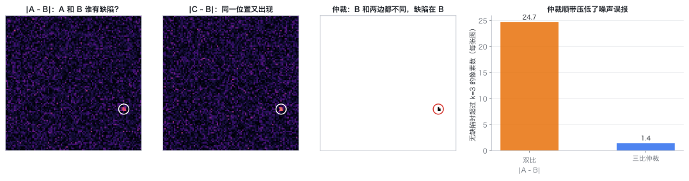
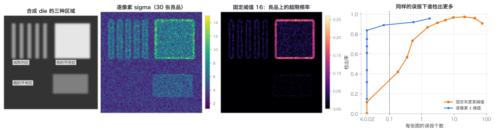
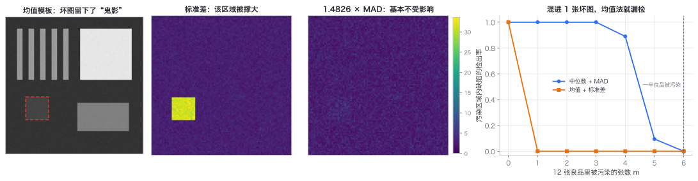
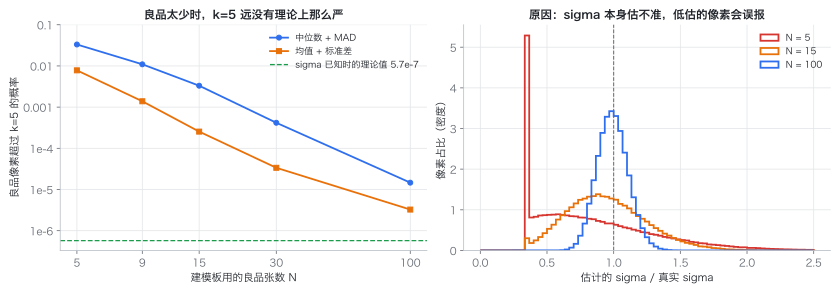
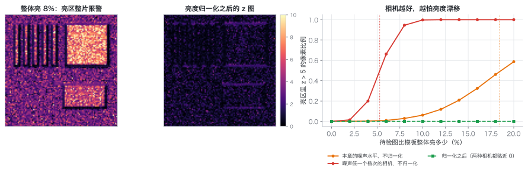
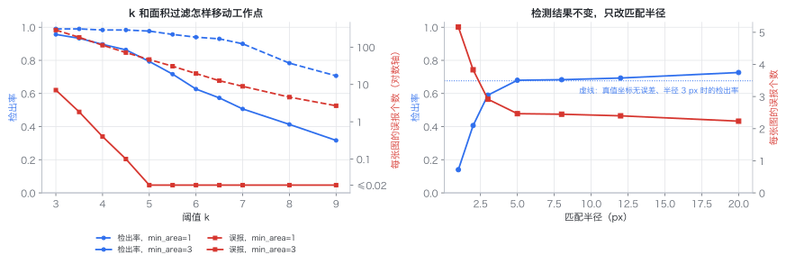

本章所有数字都来自合成数据上的实测，记录在 figures/实测数字.json，由 solutions 分支的 solutions/figures/ch18.py 生成。换成真实图像，数值会变，结论的方向要自己再测一遍。
0. 本章怎么学
应用场景：金模板比对、die-to-die 比对、印刷品和面板的外观检测。只要流程是“和一张标准图比，差得多的地方报缺陷”，用的就是这一章的方法。它也是新人最先接触的检测流水线。
优先级：P0。前置是第 3 章（形态学和连通域）和第 16 章（对齐），本章默认图已经对齐。后面第 19 章的指标和第 24 章的综合项目直接建立在本章之上。
| 档位 | 累计用时 | 做什么 | 做到什么算完 |
|---|---|---|---|
| 速通 | 3 小时 | 读第 1、3、6 节，看懂图 2、3、4、6，做第 7 节演示的三个问题，答完 4 道小测 | 能讲清为什么不用固定阈值，k 的含义为什么依赖良品张数，检出率数字为什么必须带匹配规则 |
| 标准 | 12 小时 | 读完全章，跑 Notebook，完成作业并验收通过，填实验记录 | 五项测试 PASS，实验记录里有一条 k 曲线、你选的工作点和一个失败案例 |
| 深挖 | 18 小时 | 再做第 10 节的破坏实验和第 11 节的扩展 | 能在一组自己准备的图上给出带条件的检出率和误报数 |
用时超过所选档位的 1.5 倍还没做完，就把卡点写进 学习进度.md，先往下一章走。速通档完成后本章就算“见过”，以后用到再升档。
1. 一条检测流水线长什么样
采图 → 预处理 → 对齐 → 和参考图比对 → 差异阈值 → 连通域 → 缺陷特征 → 过滤和分类 → 统计与报告
每一步都会影响最终的检出和误报，排查问题时要逐段看中间结果，而不是只盯最后的数字。本章覆盖从“和参考图比对”到“统计与报告”这一段，前面的对齐在第 16 章。
2. 参考图从哪来
| 比对方式 | 参考图 | 优点 | 缺点 |
|---|---|---|---|
| die-to-die（双比） | 相邻 die | 简单，自动抵消缓慢变化的工艺和照明差异 | 参考 die 自己有缺陷时会在两边都报差异，分不清是谁的 |
| 三比（仲裁） | 左右两个相邻 die | 三张图两两比较，谁和另外两张都不同，缺陷就在谁身上 | 需要至少三个 die，耗时增加 |
| 多 die 金模板 | 很多良品 die 的统计（中位数） | 噪声低，单张坏图影响小 | 要先有足够的良品，对缓慢漂移敏感 |
| die-to-database | 设计版图渲染图 | 能抓出所有 die 都有的系统性缺陷（重复缺陷） | 渲染要模拟光学成像，难度大（第 21、22 章） |
| 阵列比对（cell-to-cell） | 同一 die 内相邻的周期单元 | 存储阵列这类重复结构的标准做法 | 只适用于周期区域 |
2.1 双比的两个问题：归属和噪声
下面的实验取三张相邻 die，记为 A、B、C，在 B 上放一个 3×3、幅度 35 的缺陷，重复 200 次。

| 做法 | 在缺陷位置报出（共 200 次） | 能否说出缺陷在哪张图 | 无缺陷时每张图超过 k=3 的像素数 |
|---|---|---|---|
| 双比，只看 A 和 B 的差 | 184 | 不能 | 24.7 |
| 三比，B 与 A、C 都不同且方向一致 | 169，全部判给 B，没有一次判给 A 或 C | 能 | 1.4 |
归属：A 减 B 的差值只说明两张图不一样。要知道是谁的问题，必须引入第三张图。
噪声：两张图各带独立噪声，方差相加，差值的噪声标准差是单张图的 \(\sqrt{2} \approx 1.41\) 倍。用 \(N\) 张良品的中位数做参考时，参考图自己的噪声小得多，按高斯噪声下中位数的渐近方差估算，差值噪声约为单张图的 \(\sqrt{1 + \pi/(2N)}\) 倍，\(N = 12\) 时约 1.06 倍。这是金模板的主要好处。
三比要求两次差值都超限，同样的 \(k\) 下检出比双比少一些（169 对 184），但噪声造成的超限像素少了一个数量级，所以有余地把 \(k\) 调低。
2.2 重复缺陷是比对方法的盲区
如果光罩上有缺陷，每个 die 同一位置都会有。把上面实验里的缺陷同时放到三张图的同一位置，双比和三比都是 0/200 报出。die 和 die 之间没有差异，任何互相比较的方法都看不见它，只有 die-to-database 或者光罩检测能发现。
3. 阈值：为什么不能用固定灰度差
最朴素的做法是 |test - ref| > T。问题在于不同区域的噪声水平不一样：
- 图形边缘对微小错位极其敏感，差值天然大（第 16 章图 1）。
- 亮区散粒噪声大（泊松噪声方差等于均值，见第 22 章）。
- 平坦暗区噪声小，很小的差异就很可疑。
下面的实验用一张 96×96 的合成 die，里面有线阵列、亮的平坦焊盘和暗的平坦背景。成像模型里有随亮度增大的噪声和标准差 0.15 px 的对齐残差。用 30 张良品建模板，再在 60 张待检图上各放 5 个 3×3 的缺陷。

各区域估出的 sigma 中位数：暗的平坦区 3.4，线阵列区 5.4，亮的平坦区 6.6。把固定阈值定在 16（约为全图 sigma 中位数的 4 倍），在良品上统计超限的位置：
| 统计的位置 | 占图像面积 | 每个像素的超限概率 |
|---|---|---|
| 图形边缘（亮度梯度大的像素） | 25% | 2.9% |
| 亮的平坦区（取焊盘内部一块） | 约 9% | 2.5% |
| 暗的平坦区（取背景里一块） | 约 17% | 0.001% |
70% 的超限事件落在只占面积 25% 的边缘像素上，亮区和暗区的超限概率差了三个数量级。固定 \(T\) 调高，暗区的弱缺陷漏掉；调低，边缘和亮区误报一片。
| 允许的误报 | 固定阈值能达到的最高检出率 | 逐像素 z 阈值能达到的最高检出率 |
|---|---|---|
| 每张图不超过 0.1 个 | 12% | 89% |
| 每张图不超过 1 个 | 73% | 92% |
B。边缘对亚像素的对齐残差敏感，亮区散粒噪声大，两者的差值波动都比暗区大得多。实测 70% 的超限落在边缘像素上，暗的平坦区几乎没有。
3.1 按像素建噪声模型
用多张良品估计每个像素的中心值和离散程度，再算 z-score：
\(z > k\) 才算异常。这样 \(k\) 有了统计含义。噪声是高斯分布、\(\sigma\) 准确已知时，一个良品像素超过 \(k\) 的概率是 \(\operatorname{erfc}(k/\sqrt{2})\)：
| k | 单像素误报概率 | 400 万像素的图上期望的超限像素数 |
|---|---|---|
| 3 | 2.7e-3 | 10800 |
| 4 | 6.3e-5 | 253 |
| 5 | 5.7e-7 | 2.3 |
| 6 | 2.0e-9 | 0.008 |
这张表解释了为什么工业上常用 \(k = 5\) 左右：图像有几百万像素，\(k = 3\) 意味着每张图上万个噪声点。但它有一个前提，\(\sigma\) 准确已知。第 3.3 节会看到这个前提不成立时差多少。
3.2 鲁棒统计：中位数和 MAD
良品里难免混进坏图或者离群像素。均值和标准差会被它们拉偏，中位数和 MAD（median absolute deviation，中位数绝对偏差）不会：
median = 逐像素中位数
MAD = median(|x - median|)
sigma ≈ 1.4826 × MAD
1.4826 从哪来。对高斯分布，一半的样本落在 \(\mu \pm \text{MAD}\) 之内，也就是 \(\text{MAD} = \sigma \cdot \Phi^{-1}(0.75) = 0.6745\,\sigma\)。反过来 \(\sigma = \text{MAD} / 0.6745 = 1.4826 \times \text{MAD}\)。乘这个系数是为了让 MAD 估出的值和标准差在同一个尺度上，\(k\) 才有上一节那张表的含义。
实测：12 张良品，其中 \(m\) 张在一块 16×16 的区域里整体偏亮 80。待检图在这块区域里有一个 3×3、幅度 40 的缺陷，噪声标准差 3，\(k = 6\)，每个 \(m\) 做 200 次。

| 12 张良品里被污染的张数 | 0 | 1 | 2 | 3 | 4 | 5 | 6 |
|---|---|---|---|---|---|---|---|
| 中位数 + MAD 的检出率 | 100% | 100% | 100% | 100% | 89% | 9.5% | 0% |
| 均值 + 标准差的检出率 | 100% | 0% | 0% | 0% | 0% | 0% | 0% |
区域外的对照缺陷两种方法都是 100% 检出，说明失效只发生在被污染的地方。
混进 2 张坏图时，均值法在该区域的 sigma 是 31.2（真实噪声是 3），模板偏了 13.3 个灰度。中位数法的 sigma 是 3.6，模板只偏 0.7。均值法漏检的主因是 sigma 被撑大：\(40 / 31.2 \approx 1.3\)，远低于 \(k = 6\)。
还要注意中位数法的边界。理论上中位数能容忍接近一半的样本是坏的，实测 12 张里混进 4 张（三分之一）时检出率已经开始下降，5 张时基本失效。鲁棒统计只能对付少数坏样本，良品库本身仍然要筛。
B。均值确实被拉高了几个灰度，但只有这一项的话 z 仍然远超阈值。标准差从 3 变成二三十，才是把 z 压到 1 到 2 之间的原因。坏图对离散程度的破坏比对中心值的破坏更严重。
3.3 良品不够时，k 的含义会变
第 3.1 节的表假设 \(\sigma\) 准确已知。实际的 \(\sigma\) 是用 \(N\) 张良品估出来的，每个像素只有 \(N\) 个样本，估计值本身有很大的波动。被低估的像素上，正常的噪声也会算出很大的 z。
实测：纯高斯噪声（标准差 3），没有任何缺陷，\(k = 5\)。每个 \(N\) 重复建模板 30 次，共统计约 553 万个良品像素。

| 良品张数 N | 5 | 9 | 15 | 30 | 100 |
|---|---|---|---|---|---|
| 中位数 + MAD 的单像素误报概率 | 3.3e-2 | 1.1e-2 | 3.3e-3 | 4.2e-4 | 1.5e-5 |
| 均值 + 标准差的单像素误报概率 | 7.8e-3 | 1.4e-3 | 2.5e-4 | 3.4e-5 | 3.3e-6 |
| sigma 已知时的理论值 | 5.7e-7 | 5.7e-7 | 5.7e-7 | 5.7e-7 | 5.7e-7 |
| MAD 估出的 sigma 与真值之比（5% 到 95% 分位） | 0.33 到 1.72 | 0.36 到 1.59 | 0.50 到 1.47 | 0.65 到 1.33 | 0.81 到 1.19 |
读这张表的三个结论：
- 良品少时 k=5 远没有理论上那么严。30 张良品、MAD 法，单像素误报概率是 4.2e-4，比理论值高约 700 倍。折算到 400 万像素的图上是约 1700 个超限像素，不是 2 个。
- 鲁棒是有代价的。同样的 \(N\)，MAD 法的误报概率是标准差法的 4 到 13 倍，因为 MAD 估计 sigma 的效率更低。上一节看到的抗污染能力，是用这个代价换来的。
- 不要把 k 当成概率来报告。\(k\) 是一个需要在自己的数据上标定的旋钮。汇报时给实测的误报数，不要给“5 sigma 对应百万分之一”这种理论换算。
本章作业用 12 到 15 张良品，验收里带噪声的场景用 \(k = 6\) 加面积过滤，在小图上是够的。到了真实尺寸的图像，要么增加良品张数，要么把相邻像素或同类区域的统计合并起来估 sigma（第 3.5 节的分区就是一种合并），要么靠面积过滤兜底（第 5 节）。
B。实测 1.1e-2。每个像素只有 9 个样本，MAD 估出的 sigma 有一部分低于真值的一半，这些像素上普通的噪声就能超过 5 倍的“sigma”。理论值 6e-7 只在 sigma 准确已知时成立。
3.4 sigma 的下限
完全稳定的像素（比如饱和区，或者量化后数值不变的暗区）MAD 可能为 0，z 会变成无穷大，任何微小差异都报警。所以要给 sigma 设下限 min_sigma。图 4 右栏 \(N = 5\) 时左侧的尖峰，就是这个下限把过小的估计值托住的结果。下限通常取相机读出噪声的量级。
3.5 分区阈值
更进一步，工业设备会把 die 按图形类型分区（阵列区、逻辑区、空白区、边缘区），每个区单独设阈值和灵敏度。这一套设置叫检测配方（recipe），调配方是检测工程师的日常工作。分区还有一个统计上的好处：同一个区里的像素可以合起来估噪声，样本量从 \(N\) 变成 \(N\) 乘以区域像素数，上一节的问题就缓解了。
4. 整体亮度变化与归一化
照明强度、曝光时间、薄膜厚度的缓慢变化，会让待检图相对模板整体变亮或变暗。这时每个像素的差值是“亮度 × 变化比例”，和缺陷无关。
整片报警的门槛可以直接估出来：亮度为 \(L\) 的区域整体变化比例 \(g\) 时，差值是 \(gL\)，它超过 \(k\sigma\) 的条件是
实测：让良品图整体乘一个增益，统计亮的平坦区（灰度约 180）里 \(z > 5\) 的像素比例。两种相机噪声水平各做一遍。

| 待检图比模板整体亮 | 2% | 4% | 6% | 8% | 10% | 20% |
|---|---|---|---|---|---|---|
| 本章的噪声水平（亮区信噪比 27） | 0.1% | 0.3% | 0.9% | 2.9% | 6.1% | 59% |
| 低噪声相机（亮区信噪比 95） | 1.5% | 20% | 66% | 95% | 99.7% | 100% |
| 归一化之后（两种相机） | 低于 0.1% | 低于 0.1% | 低于 0.1% | 低于 0.1% | 低于 0.1% | 低于 0.1% |
按公式估出的门槛分别是 18.5% 和 5.3%，和曲线上报警比例达到一半的位置一致。
这里有一个容易忽略的结论：相机信噪比越高，越怕亮度漂移。噪声小，sigma 小，同样比例的亮度变化换算成 z 就更大。本章合成数据的噪声偏大，亮 10% 也只有 6% 的像素报警；换成信噪比 95 的相机，亮 4% 就有两成像素报警。
归一化的做法：比对之前，把待检图线性拟合到模板，\(\text{test} \approx a \cdot \text{median} + b\)，用最小二乘求 \(a\)、\(b\)，再用 \((\text{test} - b)/a\) 去比对。实验里这样处理之后，报警比例回到没有亮度变化时的水平。
两个限制要知道。第一，大面积的真缺陷会把拟合拉偏，工程上用鲁棒拟合或者只取一部分稳定像素来拟合。第二，亮度变化在视场内不均匀时，一组 \(a\)、\(b\) 不够，要分块做，或者先做平场校正（flat-field correction，拍一张均匀目标得到视场内的响应图，再用它把亮度不均除掉，做法和实测见第 22 章第 6.4 节）。
5. 连通域和缺陷特征
阈值之后得到的是像素级的候选，要合并成“缺陷”：
- 连通性：8 连通把对角相邻也算一起，4 连通只算上下左右。8 连通更符合缺陷形状，但两个挨得很近的缺陷可能被合成一个。
- 面积过滤：去掉单像素噪声点，
min_area是最常用、最有效的误报过滤器。 - 形态学：开运算去毛刺，闭运算把断开的划痕连起来（第 3 章）。闭运算能不能连上取决于结构元的方向和断口的方向对不对得上，第 3 章实测过斜向的细划痕用方形结构元连不上。
5.1 面积过滤有多有效

同图 2 的合成 die，12 张良品建模板，60 张待检图各 5 个缺陷：
| k | 4 | 4.5 | 5 | 6 |
|---|---|---|---|---|
| 不过滤：检出率 | 98% | 98% | 98% | 94% |
| 不过滤：每张图误报 | 113 | 71 | 47 | 20 |
| min_area=3：检出率 | 90% | 86% | 79% | 63% |
| min_area=3：每张图误报 | 0.4 | 0.1 | 低于 0.02 | 约 0.02 |
\(k = 5\) 时，面积过滤把误报从每张图 47 个压到几乎为 0。原因是噪声像素彼此独立：单个像素超限的概率是 \(p\)，三个相邻像素同时超限的概率在 \(p^3\) 的量级。
代价也在表里：检出率从 98% 掉到 79%。弱缺陷只有一两个像素超过阈值，和噪声点一起被滤掉了。所以 \(k\) 和 min_area 要一起调：有了面积过滤，可以把 \(k\) 降到 4 或 4.5，换回一部分检出。
这个推理只对彼此独立的噪声成立。对齐残差造成的超限沿边缘连成一串（第 16 章图 1），面积过滤滤不掉，要靠提高对齐精度或者边缘区降灵敏度。
5.2 连通域标记的实现
作业要求不用库函数实现连通域标记。两种常见写法：
- 广度优先搜索（BFS）：光栅扫描，遇到没标记的前景像素就开一个新编号，用队列把和它连通的像素全部标上。
- 两遍扫描加并查集：第一遍给每个像素临时编号并记录哪些编号相通，第二遍把相通的编号合并。
不要用递归的深度优先搜索。一个大连通域可能有几十万像素，递归深度会超过语言的栈上限（第 15 章第 4 节专门讲了这个问题）。
编号有两条约定，验收都会检查。第一，编号连续，从 1 到 n 不跳号。第二，按每个连通域第一个像素的光栅顺序（先行后列）编号。广度优先搜索天然满足这两条。两遍扫描要小心：一个 U 形区域的两条竖线在第一遍里会拿到两个临时编号，到底部才发现它们相通，合并之后必须重新编号。
5.3 缺陷特征
每个缺陷提取特征，供后续过滤和分类：
| 特征 | 用途 |
|---|---|
| 面积、外接框 | 尺寸分级，按尺寸设报警门槛 |
| 质心（可以按 z 加权；本章作业约定不加权，取像素坐标的算术平均） | 定位、和复查结果匹配 |
| 最大 z、平均 z | 信号强度，区分真缺陷和噪声 |
| 极性（比参考亮还是暗） | 区分颗粒（多为亮）和缺失（多为暗） |
| 长宽比、方向 | 识别划痕 |
| 所在区域类型 | 不同区域的缺陷影响不同 |
6. 工业指标与怎样评估
| 术语 | 含义 |
|---|---|
| 检出率（capture rate） | 真缺陷中被检出的比例 |
| 漏检（escape） | 真缺陷没被检出 |
| 误报（nuisance / false alarm） | 报出来的不是真缺陷，或者是不关心的缺陷 |
| 过检（overkill） | 良品被判为不良 |
| DOI（defect of interest） | 关心的缺陷类型，检测灵敏度围绕它调 |
代价不对称：漏检意味着坏芯片流到后道甚至客户，代价很高；过检意味着良品被报废或者送去人工复查，代价是成本和产能。所以产线一般先定漏检上限，在满足上限的前提下压低过检。第 19 章的 threshold_at_escape 就是这个思路。
6.1 匹配规则会改变指标
预测和真值距离多少以内算命中？一个真值能不能被多个预测命中？这些规则要提前定好。作业里的贪心一对一匹配是常用做法。
规则的影响有多大，可以量出来。图 6 右栏的实验里，检测结果完全固定，真值坐标带有标准差 1.5 px 的定位误差（人工标注或者复查设备给的坐标都有误差），只改变匹配半径：
| 匹配半径（px） | 1 | 2 | 3 | 5 | 8 | 20 |
|---|---|---|---|---|---|---|
| 检出率 | 14% | 41% | 59% | 68% | 68% | 73% |
| 每张图误报 | 5.2 | 3.8 | 2.9 | 2.5 | 2.5 | 2.2 |
同一份检测结果，检出率可以报成 14%，也可以报成 73%。半径太小，定位稍有偏差的命中被同时记成一次漏检和一次误报。半径太大，不相干的误报被配给了漏掉的真值，检出率虚高（真值坐标没有误差时的检出率是 68%，半径 20 px 时报出了 73%）。
合理的半径由真值的定位精度和缺陷之间的最小间距决定：大于前者的两到三倍，小于后者的一半。
B。检测输出已经固定，k 和随机种子都不再起作用。上面的实验里，匹配半径 2 px 时检出率是 41%，5 px 时是 68%。
6.2 怎么报告
- 不要只给一个准确率。给出检出率和误报数随阈值变化的曲线（图 6 左栏），标出当前工作点。
- 写清条件：良品张数、k、
min_area、匹配半径、测试集有多少缺陷、分别是什么类型和尺寸。 - 缺陷样本少时报置信区间。例如 30 个真缺陷检出 28 个，检出率 93%，Wilson 95% 置信区间是 79% 到 98%。只报“93%”会让人以为它比 90% 好。
- 误报用“每张图”或“每片晶圆”多少个来报，不要用比例。良品像素太多，按像素算的误报率总是小得没有区分度。
7. 交互演示
把“阈值切在哪”抽象成两个分数分布：良品的分数和缺陷的分数。拖动阈值看过检和漏检怎样此消彼长，再改变缺陷率，看报警里真缺陷的比例怎么变。按页面里“试一试”的三个问题操作。
8. 典型误报来源
| 误报 | 根因 | 对策 |
|---|---|---|
| 沿图形边缘的细长误报 | 对齐残差 | 提高对齐精度，边缘区降灵敏度 |
| 整片区域报警 | 照明或膜厚漂移导致整体亮度变化 | 比对前做亮度归一化（第 4 节） |
| 散落的单像素点 | 噪声，或者良品张数不够导致 sigma 被低估 | 面积过滤、提高 k、增加良品 |
| 颜色差（color variation） | 薄膜厚度变化引起干涉颜色不同，但不是缺陷 | 分区阈值、用更多参考 |
| 图像边界报警 | 对齐后边界无数据 | 去掉边界一圈 |
第 24 章的综合项目会让你亲手遇到前两种。
9. 常见错误
| 现象 | 原因 | 怎么查 |
|---|---|---|
| sigma 整体偏小约三分之一，误报很多 | MAD 忘了乘 1.4826 | 用标准差为 3 的纯噪声测，sigma 中位数应接近 3 |
| 某些像素 z 是 inf 或 nan | sigma 为 0，没有设下限 | 用完全相同的几张图建模板测 |
| 差值出现 250 左右的大数 | 用 uint8 直接相减发生回绕 |
先转成 float64 |
| sigma 在坏图污染的地方被撑大 | MAD 的偏差以均值为中心，或者取了平均值而不是中位数 | 手算一组带离群值的数，例如 0、1、2、3、100 |
| 调用之后良品图的内容变了 | 对输入原地排序 | 调用前后比较输入数组 |
| 对角相连的缺陷被拆成两个 | 用了 4 连通 | 测两个对角相邻的像素 |
| 图像左右两边的区域被连成一个 | 邻点下标只检查了上界，负下标绕到了另一侧 | 在四条边上各放一个孤立像素，应是 4 个区域 |
| 编号跳号，或者顺序和预期不同 | 两遍扫描合并之后没有按光栅顺序重新编号 | 测一个 U 形区域，两条竖线之间再放一个孤立点 |
| 大连通域上程序崩溃 | 用递归实现连通域，栈溢出 | 用一张全是前景的大图测 |
| bbox 比预期小一行一列 | 没按开区间约定给 y1、x1 加 1 |
测一个 3×3 的方块，bbox 的高和宽应为 3 |
面积恰好等于 min_area 的缺陷丢了 |
过滤条件写成了面积大于 min_area |
测一个面积正好等于 min_area 的缺陷 |
| 质心坐标顺序反了 | 把 (x, y) 当成了 (行, 列) | 测一个不在对角线上的缺陷 |
| 质心和预期差不到半个像素 | 用了外接框的中心，或者按 z 加权 | 测一个 L 形的缺陷，它的质心不在外接框中心 |
max_z 每个缺陷都一样，或者大得离谱 |
取了全图的最大值，或者填的是灰度差 | 在 sigma 不同的两个区域各放一个缺陷测 |
| 一个真值被两个预测同时命中，tp 大于真值个数 | 匹配没做一对一 | 在同一个真值附近放两个预测测；再反过来，一个预测夹在两个真值中间 |
| 明明两对都能配上，只配上了一对 | 没有按距离从小到大取，按输入顺序先到先得 | 构造一个预测离两个真值都近、但另一个预测只够得着其中一个的例子 |
| 没有真值时检出率是 0，或者程序报错 | truth 为空时没有单独处理 |
传空的真值列表，再传空的预测列表 |
10. 破坏实验
每个实验先写下预测，再运行，把结果和原因记到 实验记录.md。前三个是标准档必做。
- 把良品张数从 12 减到 5，k 保持 6 不变。良品图上的误报数怎么变？对照图 4 和 Notebook 实验 3 解释。
- 让待检图整体亮 10%，不做归一化（Notebook 实验 4）。误报出现在哪些区域？按第 4 节的公式，你的数据里整片报警的门槛是百分之几？
- 把
min_area设为 1 和 9，各丢掉了什么？ - 把 3 张良品换成同一位置带大缺陷的图，比较中位数加 MAD 和均值加标准差（Notebook 实验 2）。再换成 5 张试试。
- 图 2 最右一栏里，固定阈值从 12 降到 8，检出率反而从 97% 降到 91%。先猜原因，再画出阈值为 8 时的候选掩膜验证。
- 把匹配半径从 3 改成 1 和 10，同一份检测结果的检出率各是多少？（Notebook 实验 5）
11. 扩展（深挖档）
- 实现三比仲裁：输入三张图，输出只属于中间那张的缺陷。复现第 2.1 节的表。
- 实现分区阈值：给 die 画一张区域图，每个区用区内所有像素合起来估 sigma，比较和逐像素估计在良品少时的误报。
- 实现亮度归一化，并构造一个“大面积真缺陷把拟合拉偏”的例子，再用只取中间 80% 像素的办法修好它。
- 下载
data/README.md里列的 DAGM 2007 数据集，选一类纹理规则的样本，用本章的流水线跑一遍，按第 6.2 节的格式写报告。
12. 和后续章节的关系
- 第 16 章的对齐精度决定了本章边缘区的 sigma 有多大。
- 第 19 章的异常检测把“和模板逐像素比”换成“和良品特征比”，指标和工作点的思路完全相同。
- 第 22 章解释亮区噪声为什么大（散粒噪声）。
- 第 24 章把对齐、亮度归一化、金模板、阈值和连通域串成一条流水线。
自测问题
- 双比法报出一个差异，怎样判断缺陷在待检 die 还是参考 die 上？
- 光罩缺陷为什么 die-to-die 检测不出来？
- 为什么 MAD 要乘 1.4826？
- k 从 4 提到 6，检出率和误报率大致怎么变？
- 同一批数据，两个人报出的检出率差很多，最先该核对什么？
- 只有 10 张良品时，“k=5 对应百万分之一的误报”这句话错在哪？有哪些补救办法？
- 换了一台噪声更低的相机之后，整片报警反而变多了，可能是什么原因？